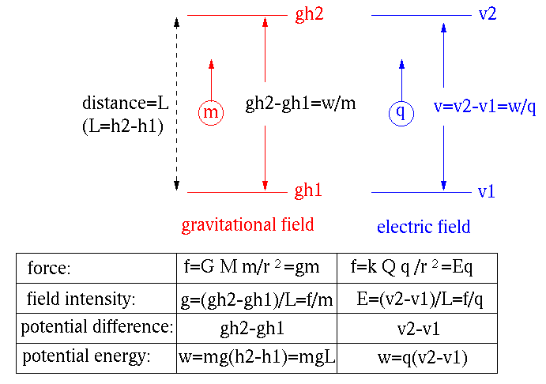
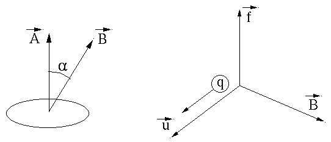

Next: Resistor, Capacitor, and Inductor Up: Chapter 1: Basic Quantities Previous: Chapter 1: Basic Quantities
| (1) |
| (2) |
 is
is
| (3) |
.
| (4) |
(with weight ) is raised up from height
to  , it receives a potential energy
, it receives a potential energy
| (5) |
| (6) |
| Ampere | (7) |
The current is the same through out an electricity conducting component, it is a through variable.
Current density ,
| (8) |
| (9) |
 gains a potential energy
gains a potential energy
| (10) |
| (11) |
Voltage is energy per charge, while electric field is force per charge.
The voltage is measured as the difference across two points in an electric field or circuit (or a point with respect to a reference point called ground), i.e., it is an across variable.
Power is the rate of energy transformation. The transformation of 1 Joule of energy in 1 second represents a power of 1 Watt:
| (12) |
| (13) |

Energy can also be measured by kilowatt-hours (kWh) Joules.
The energy needed to move a charge from point A with potential to point B with potential is:
| (14) |
An electric field is the electric potential difference per unit distance.
The energy needed to move a mass from height with
potential to height with potential is
| (15) |

| Force | ||
| Field intensity | ||
| Potential difference | ||
| Potential energy |
The intensity of magnetic effect (lines per unit area in a magnetic field or flux) is measured by magnetic flux density in Tesla. The Earth's magnetic field is about 25 to 65 micro Tesla, the MRI machine is either 1.5 or 3 Tesla.
The magnetic flux through an area  (in the normal
direction of the area) is
(in the normal
direction of the area) is
| (16) |
When and are in the same direction (),
and if is 1 Tesla and is 1 square meter, then the
flux is 1 Weber.
In a magnetic field , a force  is exerted on a charge
moving with velocity :
is exerted on a charge
moving with velocity :
| (17) |
is the cross product of velocity vector
and magnetic flux vector (right-hand rule).
A force of 1 Newton is experienced by a charge of 1 Coulomb moving with a velocity of 1 meter per second normal to a magnetic flux density of 1 Tesla.

The Lorentz force on a charge in electromagnetic field is
| (18) |